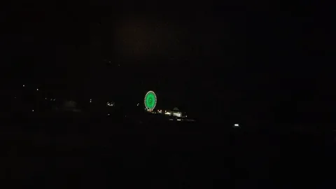
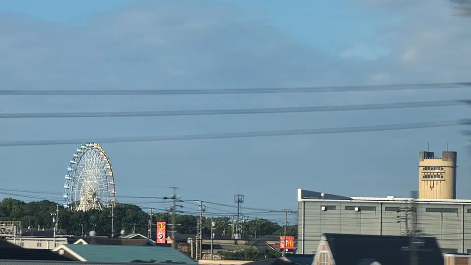
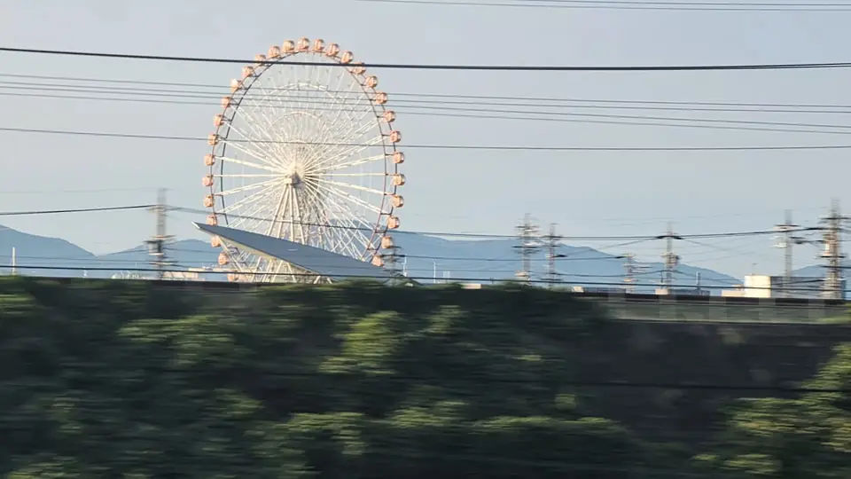
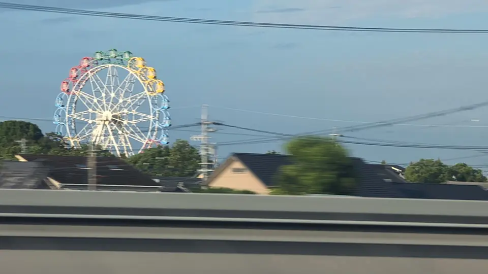
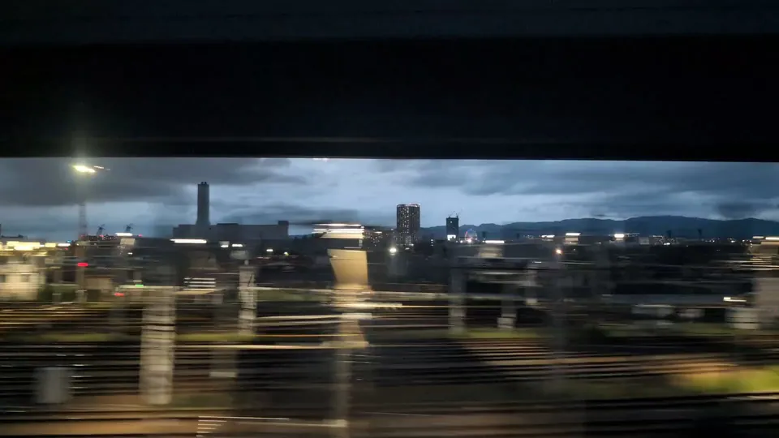

COLECCIÓN DE NORIAS
Colección de norias
Registra cada noria que veas y tu medalla crecerá.
Hirakata Park comparte su registro con el sello de tus sellos de viaje.
TOKIO → SHIN-OSAKA
Sigue las norias hacia el oeste
Cada noria muestra un tiempo de paso estimado para un Nozomi que sale de Tokio y su distancia a la línea. Hacia Tokio, el orden se invierte, pero el lado del asiento sigue igual. El tiempo y los edificios intermedios afectan a las vistas lejanas.
Noria Fuji Sky View
Una pequeña noria más allá del puente de tuberías


Al cruzar el río Fuji, mira más allá del puente blanco de tuberías por el lado del asiento E. Fuji Sky View, en el área de servicio Fujikawa en sentido Tokio, aparece como una pequeña noria lejana: otro detalle del panorama del río y la montaña.
Abrir la guía de la vistaAbrir la ubicación en Google Maps ↗Explorar con Street View ↗Información oficial para visitantes (japonés) ↗
Parque Nonhoi
Una noria antes de Toyohashi


Justo antes de Toyohashi, por el lado del asiento A, una noria blanca se alza sobre los tejados de casas y fábricas. Su forma se recorta contra el cielo, incluso en días nublados.
Avistamiento: 新幹線の車窓から 099 (japonés) ↗Abrir la ubicación en Google Maps ↗Explorar con Street View ↗Información oficial para visitantes (japonés) ↗
Laguna Ten Bosch
Mira hacia la ciudad costera


La noria de Laguna Ten Bosch está en la costa de Gamagori. Por el lado del asiento A se alza blanca sobre bloques de pisos y campos; supera la altura de los edificios cercanos y se distingue mejor de lo que su distancia sugiere.
Avistamiento: 新幹線の車窓から 099 (japonés) ↗Abrir la ubicación en Google Maps ↗Explorar con Street View ↗Información oficial para visitantes (japonés) ↗
Parque Horiuchi
La noria de un parque se suma al viaje


El parque Horiuchi de Anjo también tiene una noria. Se ve pequeña tras las casas por el lado del asiento A, antes de Mikawa-Anjo. Es más baja que la de Laguna y se confunde fácilmente con los edificios.
Avistamiento: 新幹線の車窓から 099 (japonés) ↗Abrir la ubicación en Google Maps ↗Explorar con Street View ↗Información oficial para visitantes (japonés) ↗
Nagoya Port Sea Train Land
Un pequeño aro a lo lejos

Por el río Horikawa aparece entre edificios una silueta tenue de noria en el lado del asiento A. A unos 3 km de la línea, es difícil verla a simple vista. Hacia Tokio aparece justo después de Nagoya. Algunos relatos indican que la luz del amanecer o la iluminación nocturna ayudan, mientras que de día suele quedar a contraluz.
Avistamiento: 新幹線の車窓から 115 (japonés) ↗Más información: relato de blog sobre esta noria desde el tren (japonés) ↗Abrir la ubicación en Google Maps ↗Explorar con Street View ↗Información oficial para visitantes (japonés) ↗
Hirakata Park
Al otro lado del río Yodo

Sky Walker aparece al otro lado del río Yodo: un pequeño aro entre edificios y torres eléctricas. Cuando está iluminada de noche, la noria flota sola sobre la orilla oscura.
Abrir la guía de la vistaAbrir la ubicación en Google Maps ↗Explorar con Street View ↗Información oficial para visitantes (japonés) ↗
OSAKA WHEEL en EXPOCITY
Otra noria, al otro lado


Desde el asiento E en el depósito de Torikai, busca la pequeña noria de EXPOCITY detrás de los edificios al otro lado de los trenes estacionados. Puede estar parcialmente oculta: usa la foto para encontrar el hueco.
El 10 de septiembre de 2026, la web oficial indicaba una suspensión de operaciones. Que se vea desde el tren no significa que la atracción o sus luces estén funcionando.
Avistamiento: Zusshi, «Vi la noria desde el Shinkansen» (japonés) ↗Abrir la ubicación en Google Maps ↗Explorar con Street View ↗Lado confirmado por el boletín de Suita, julio de 2024, p. 8 (PDF japonés) ↗Información turística oficial ↗
Sobre esta colección
Los tiempos estimados, lados y distancias se calculan proyectando cada instalación sobre nuestros datos de vía, construidos a partir de recorridos GPS registrados. Suponen un Nozomi de 147 minutos entre Tokio y Shin-Osaka; los trenes con más paradas o retrasos serán distintos.
Las coordenadas proceden de Wikipedia en japonés, salvo las de Hirakata Park, que usa nuestros propios datos.
Si has fotografiado alguna de estas norias desde el tren, nos encantará saber de ti. Contacto